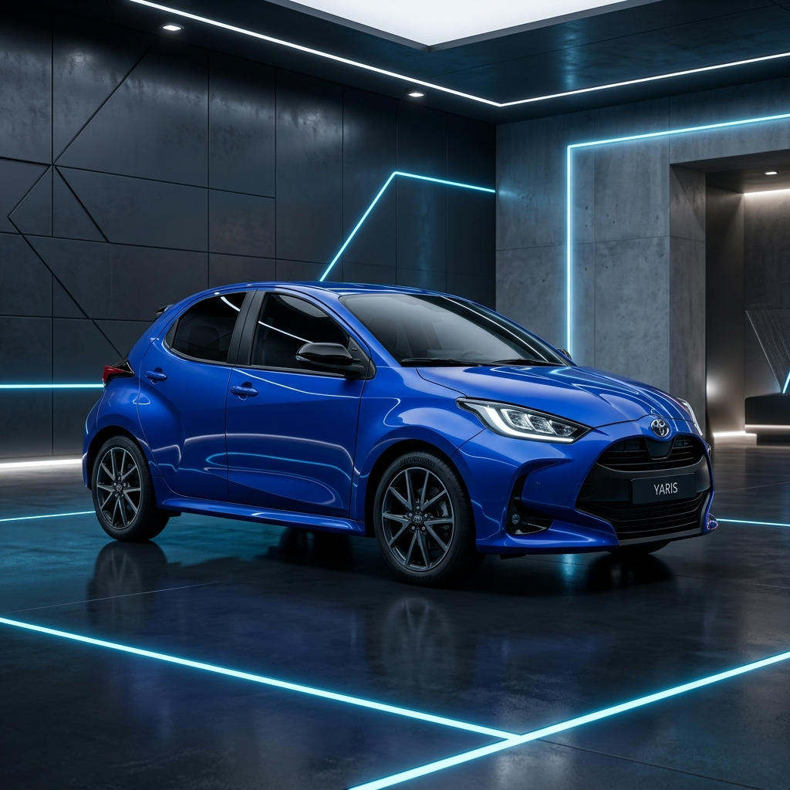

12,500
km
Kilometraje
Precision Motors
Sistema de Gestión de Restauración Vehicular
Proyecto Activo

2026
En Restauración
Toyota Yaris
1.5L Dynamic Force Dual VVT-i · CVT · Azul Metálico
Avance General del Proyecto
67%
120
CV
Potencia
87
días
En Taller
24
pzas
Repuestos
Video del modelo
Toyota GR Yaris: origen, diseño y rendimiento
El Toyota Yaris 1.5L Dynamic Force Dual VVT-i destaca por su eficiencia de combustible, conducción suave y tecnología moderna. Equipado con transmisión automática CVT, ofrece una experiencia cómoda tanto en ciudad como en carretera, mientras que su acabado en Azul Metálico resalta un diseño elegante, aerodinámico y funcional.
Estado Mecánico
Seguimiento detallado por sistema del Toyota Yaris 2026
Revisión completa de válvulas, pistones y sistema de lubricación. Aceite Mobil 1 5W-30 instalado. Motor dentro de especificaciones Toyota.
Progreso
Calibración del sistema CVT Direct Shift. Reemplazo de correa y poleas. Aceite Toyota CVT FE. Progreso al 60% de la revisión programada.
Progreso
Sustitución de pastillas y discos delanteros/traseros. Revisión del módulo ABS con VSC. Purga del líquido de frenos DOT 4. Estimado 20% completado.
Progreso
Reemplazo de amortiguadores KYB Excel-G delanteros y bujes de barra estabilizadora. Alineación y balanceo de cuatro ruedas pendiente. Avance inicial 10%.
Progreso
Corrección de abolladuras, aplicación de pintura Toyota Azul Metálico #8X8 con barniz de alta durabilidad. Pulido, encerado y protección ceramic coat aplicada.
Progreso
Diagnóstico OBD-II completo, revisión del arnés de cableado, actualización de firmware ECU y revisión del sistema de luces LED adaptativas. 45% avanzado.
Progreso
Inventario de Repuestos
Repuestos OEM y certificados para Toyota Yaris 2026 · 1.5L
3 En Stock
1 Pocas Unidades
1 Agotado
Filtro de Aire Toyota OEM
₡ 18,500
En Stock
Pastillas de Freno Delanteras Toyota
₡ 47,200
En Stock
Juego de Amortiguadores KYB
₡ 132,800
Pocas
Unidades
Bomba de Agua Aisin
₡ 58,500
En Stock
Alternador Denso
₡ 89,900
Agotado